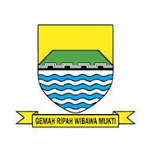

Ruang Terbuka Hijau (RTH) merupakan area memanjang atau mengelompok yang penggunaannya bersifat terbuka dan ditumbuhi vegetasi, baik alami maupun yang sengaja ditanam. RTH berfungsi sebagai kawasan ekologis, sosial, estetika, serta penunjang kualitas lingkungan perkotaan.
Kota Bandung memiliki luas wilayah sekitar 167,3 km² (16.730 hektare), sementara luas Ruang Terbuka Hijau (RTH) yang tersedia baru mencapai sekitar 12,8% atau sekitar ±2.100 hektare dari total wilayah kota. Angka tersebut masih berada di bawah ketentuan ideal berdasarkan Undang-Undang Penataan Ruang yang menetapkan proporsi minimal 30% RTH untuk kawasan perkotaan.
Oleh karena itu, penambahan RTH di Kota Bandung masih diperlukan guna meningkatkan kualitas lingkungan perkotaan, mengurangi suhu panas perkotaan (urban heat island), meningkatkan resapan air untuk mengurangi risiko banjir, memperbaiki kualitas udara, serta menyediakan ruang publik yang sehat dan nyaman bagi masyarakat.
Dalam WebGIS ini, ditampilkan persebaran titik RTH Kota Bandung, prioritas pengembangan RTH, serta parameter pendukung seperti NDVI, kemiringan lereng (slope), dan Thermal Humidity Index (THI) sebagai dasar rekomendasi wilayah potensial RTH.
WebGIS ini menampilkan Persebaran Ruang Terbuka Hijau (RTH), Prioritas Area untuk RTH, Analisis radius, serta Routing lokasi berbasis GeoJSON di Kota Bandung.
Buka WebGIS